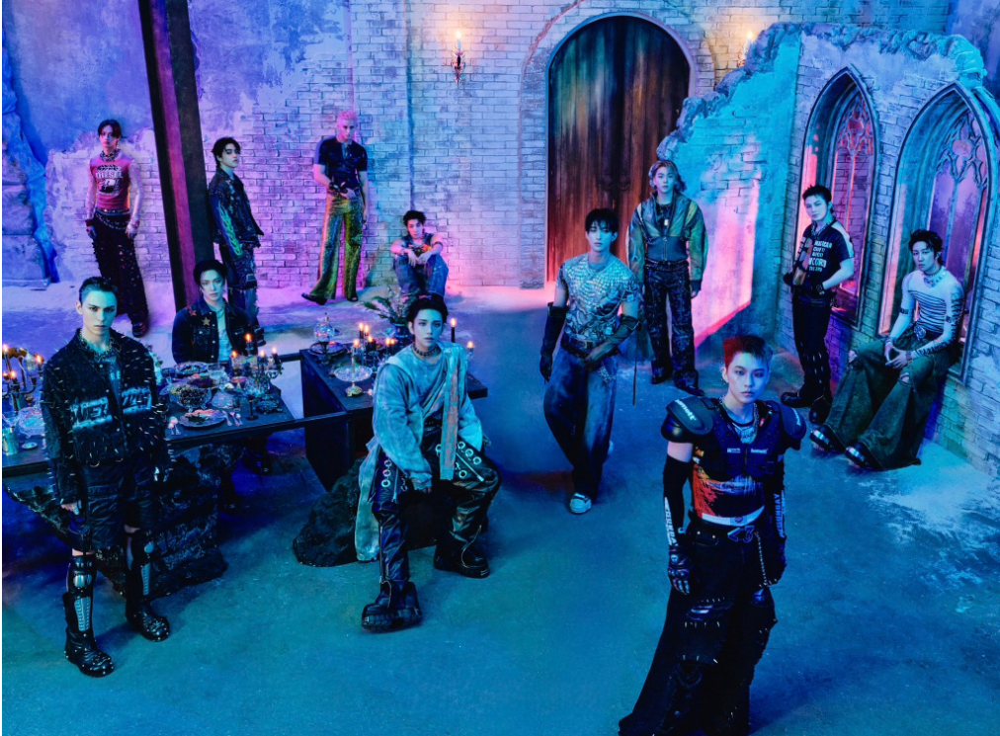
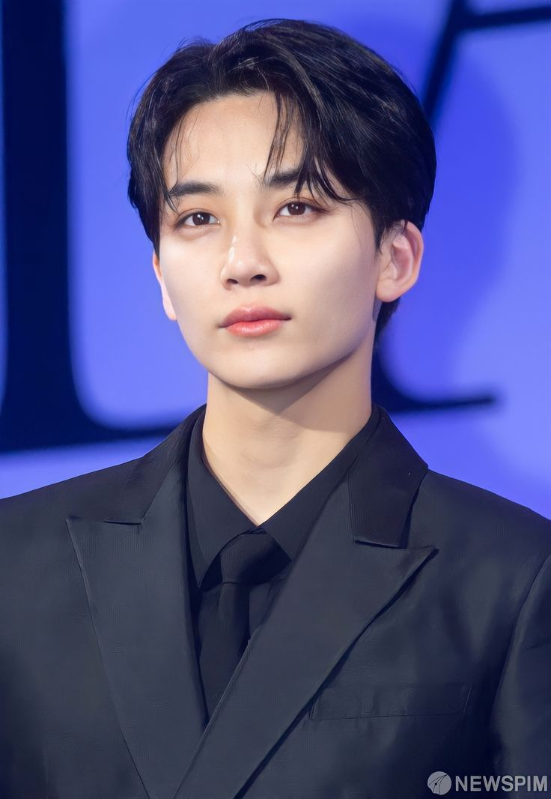
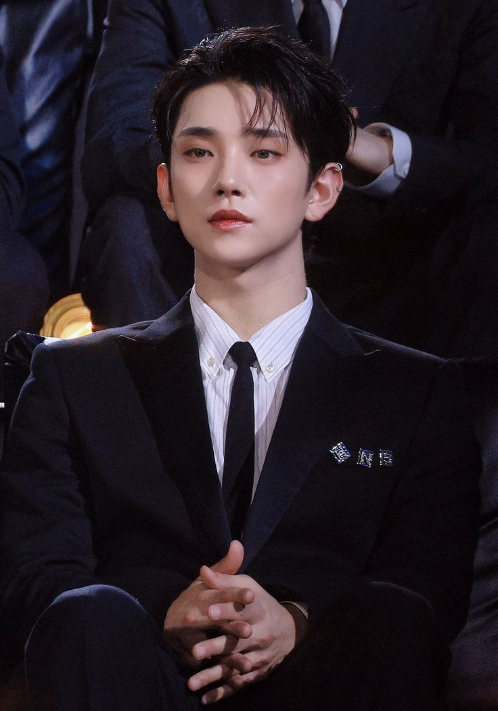
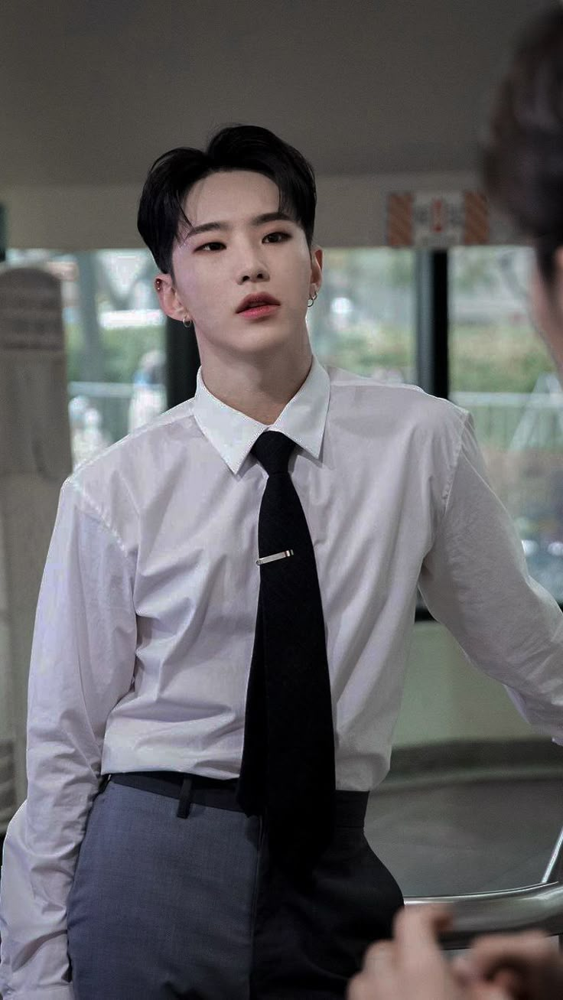
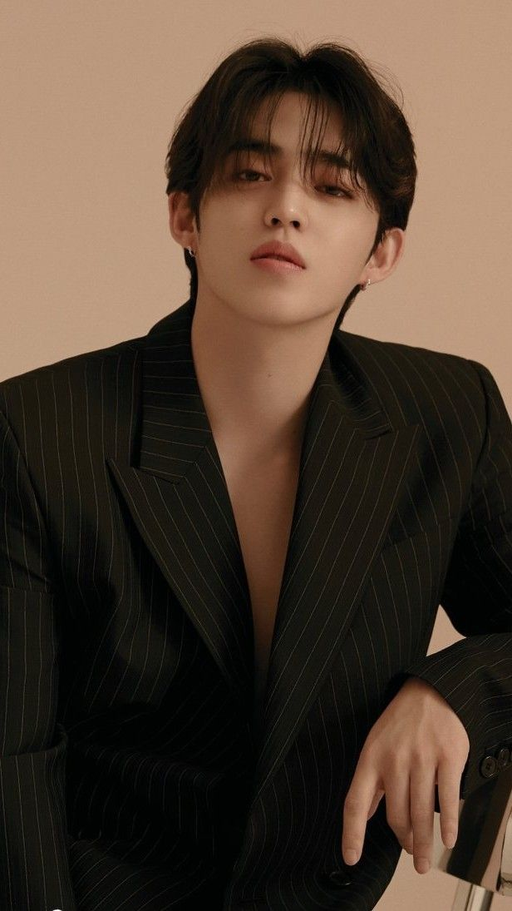
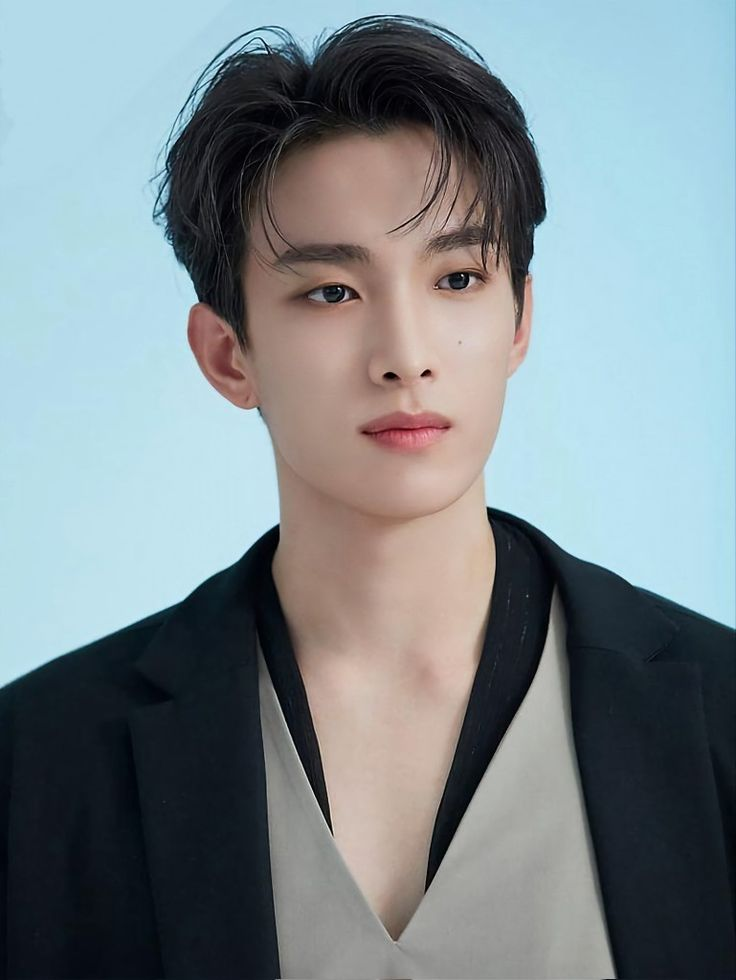
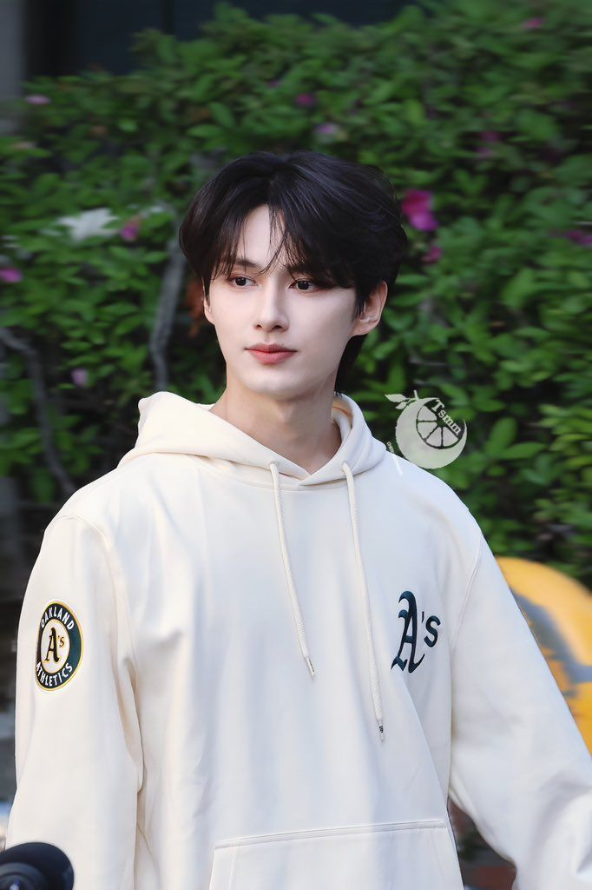
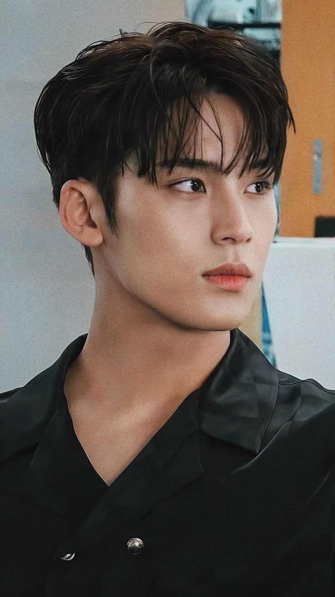

SEVENTEEN (세븐틴) is a 13-member South Korean self-producing boy group under Pledis Entertainment, a subsidiary of HYBE Labels. The group consists of S.Coups, Jeonghan, Joshua, Jun, Hoshi, Wonwoo, Woozi, DK, Mingyu, The8, Seungkwan, Vernon, and Dino. They debuted on May 26, 2015, with their first mini album, 17 CARAT.







He was born in Hwaseong, South Korea., He has a sister who is four years younger than him.,He ranks himself the third best visual in the group, after Vernon and Mingyu.,He became a trainee in 2013.,He admires SHINee’s Taemin.,He likes Korean food, especially stews and chicken.,His favorite food is pasta.,He has his driver’s license.,He can play the bass guitar.,He says he’s closest to Joshua among all the SEVENTEEN members.,He and Hoshi appeared as guest judges on King of Masked Singer.,Between dating someone older or younger, he prefers someone older, because he needs someone to take care of him.,He enlisted in the military on September 26, 2024. He will return on June 25, 2026.